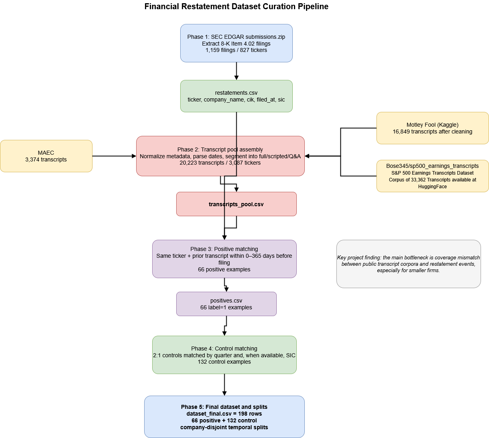

We study whether executives’ language on earnings call transcripts contains detectable precursors of later SEC Form 8-K Item 4.02 restatement disclosures. Since our original proposal, we have built the end-to-end dataset curation pipeline that extracts restatement labels from SEC EDGAR (through the EDGAR API or submissions.zip bulk data), assembles transcripts from MAEC, Motley Fool and S&P500 Earnings Call Transcripts Corporal (via HuggingFace (Bose345/sp500_earnings_transcripts)), segments calls into scripted prepared remarks and unscripted Q&A, and matches calls to later restatements. The current dataset contains 198 labeled examples (66 positive, 132 matched controls). Given the limited overlap between public transcript corpora and restatement events, our current three-tier (Loughran–McDonald lexicon baseline, fine-tuned transformers experiments, and zero-/few-shot LLM prompting) modeling plan emphasizes the ability of our models to generalize under small-data conditions.
The figure below summarizes our current data curation pipeline. We first extract Item 4.02 filings from SEC bulk submissions data, then combine free earnings-call transcript corpora, segment calls into full/scripted/Q&A views, match positives in a pre-event window, and construct a 2:1 matched control set.

This project’s main technical milestone till the check-in is the dataset pipeline, which covers 2 out of the 5 phases of our projects. The biggest challenge was aligning regulatory events with publicly available transcript data in a leakage-aware way.
What problem are we trying to solve?
When a publicly traded company files SEC Form 8-K Item 4.02, it formally discloses that previously issued financial statements should no longer be relied upon. We ask whether there are earlier linguistic signals in management’s earnings-call language—especially in unscripted analyst Q&A—that precede these restatement disclosures.
Why is this difficult?
Prior work on earnings calls mostly studies market outcomes such as volatility or returns, not discrete regulatory events. In our case, the core difficulty is dataset construction, because the public transcript corpora skew toward large-cap firms, while Item 4.02 restatements often occur at smaller firms with weaker controls. This creates a structural coverage mismatch between labels and available text.
Why does it matter?
If linguistic signals exist before a restatement becomes public, they could support a probabilistic screening tool for analysts, regulators, or researchers. Our aim is not to accuse firms of fraud, but to study whether language carries measurable early-warning patterns under realistic data limitations.
How is the dataset built?
What changed relative to the original proposal?
Originally, we proposed a 90–180 day clean window and a target of roughly 300–500 labeled calls. In practice, public transcript coverage limited overlap with restatement events. We therefore broadened the positive matching window to 0–365 days
Interpretation.
The small number of positives is not a pipeline failure; it reflects a real structural limitation of free data sources. Of 827 unique restating tickers, only a small subset appear in available transcript corpora with usable dates and text. This finding itself is an important project outcome and directly motivates our small-data evaluation strategy.
Current model tiers
Our most significant result so far is the fully implemented dataset curation pipeline and the first viable matched dataset for the task.
| Stage | Output | Status |
|---|---|---|
| Phase 1 | Pull Restatement data and transcript collection | Complete |
| Phase 2 | Scripted/Q&A segmentation, matched control construction, final dataset curation | Complete |
| Phase 3 | LM Lexicon Baseline, Transformer fine-tuning | In progress |
| Phase 4 | Zero-/Few-shot LLM prompting | To be done |
| Phase 5 | Results and Error Analysis | To be done |
Current limitation.
The main limitation is dataset overlap. Public transcript resources underrepresent the smaller firms that disproportionately appear in the restatement set. This reduced our final matched dataset to 66 positives, which is enough for lexicon baselines, prompt-based evaluation, but the dataset size is not ideal for strong end-to-end transformer fine-tuning claims.
How we are responding to that limitation.
The next phase focuses on: (1) lexicon baselines, (2) fine-tuned transformers (or potentiallly contextual embedding or lightweight transformer-based models), and (3) zero-/few-shot LLM prompting. As per our discussion witht the course staff, we will use FinBERT as our second model tier data because it is a financial domain-related transformer model, hence may result in better performance as compared to Longformer, which is a general transformer model. We will compare performance across full transcripts and Q&A-only sections and emphasize error analysis and interpretability over headline accuracy alone.
Ethical framing.
This project does not claim to detect fraud or intentional deception. It studies linguistic patterns associated with later restatement disclosures and should only be interpreted as an exploratory risk-screening framework requiring human review.